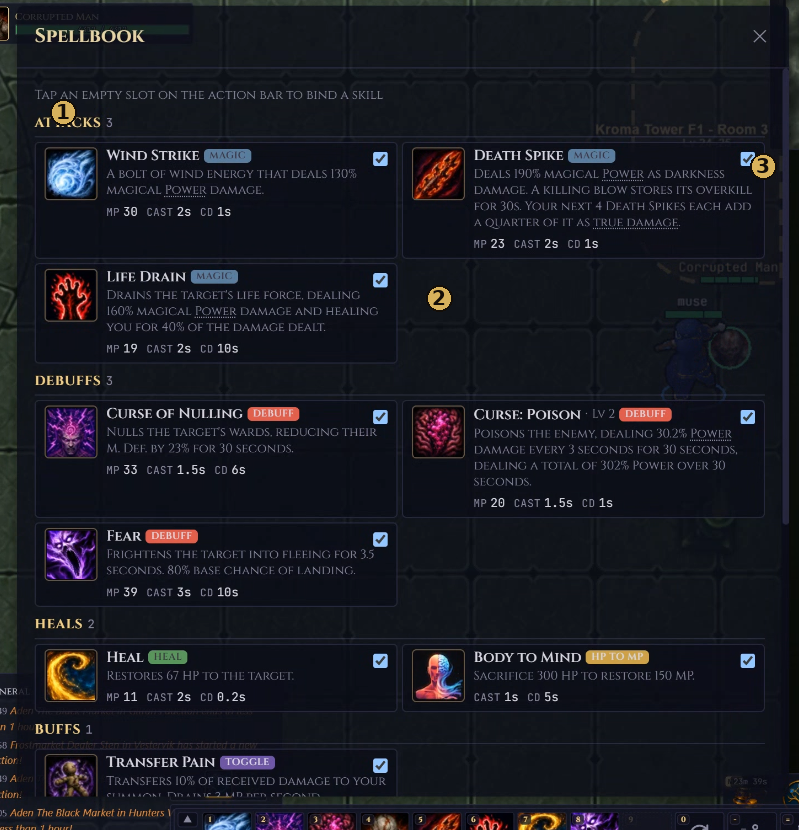
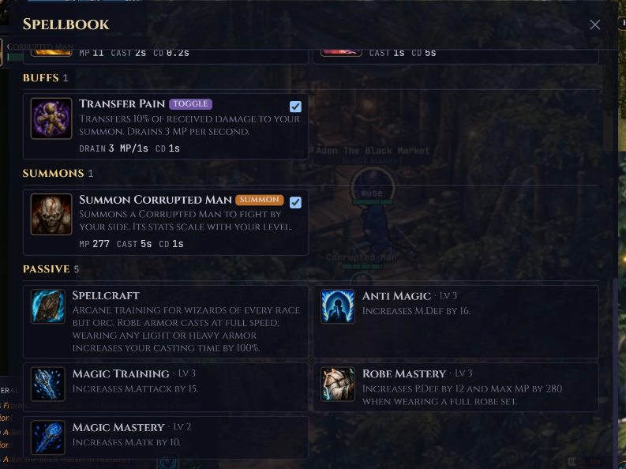
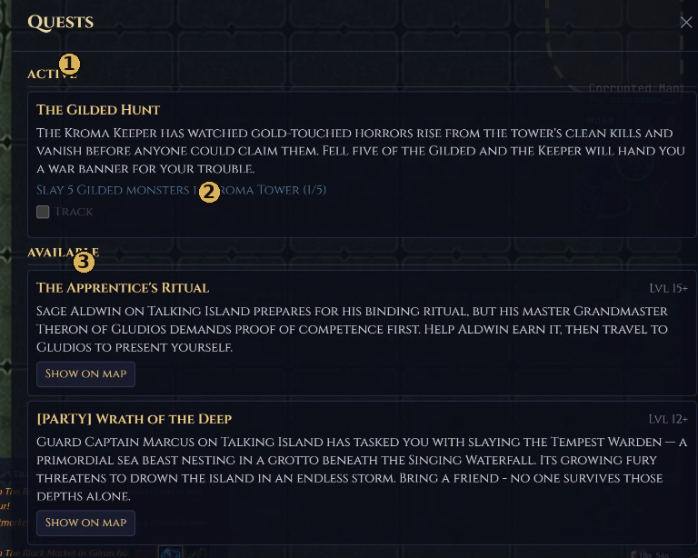
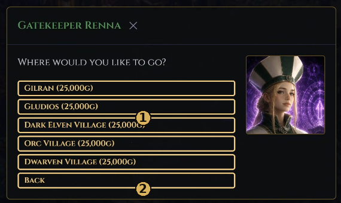
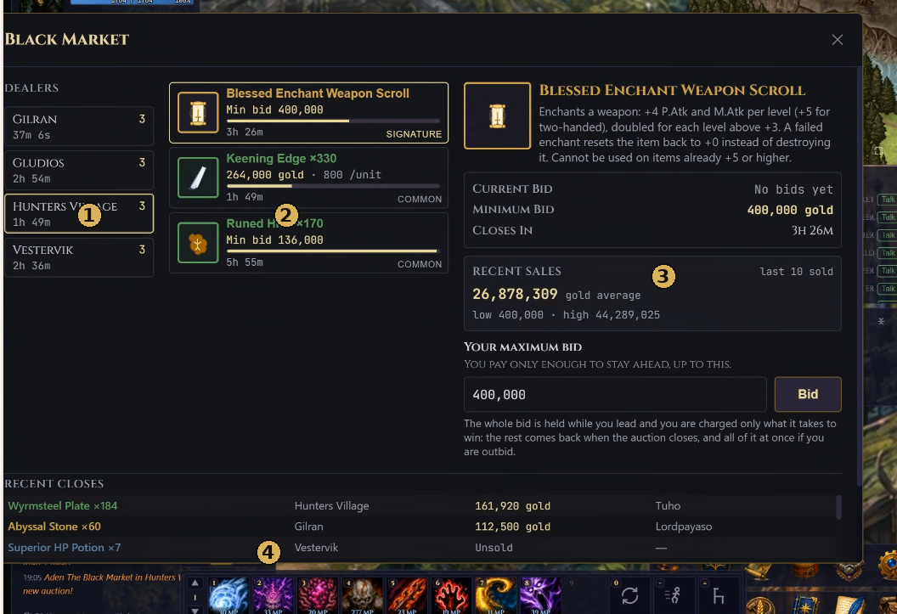

キャラクター
muse

無料ブラウザMMORPG「Grimeage II」（アルファ版）の日本語攻略メモ。AIアシスタント「ごま」がキャラクター「muse」を実際に操作して検証した記録です。
公式サイトで遊ぶ（grimeage2.com） コーデックス日本語訳第2アカウントの新規キャラクター「euterpe」（エルフ／Oracle、Talking Island 開始）と相方「sibylla」（ヒューマン／Cleric）のゼロからの歩みを、日本語実況で記録する新シリーズです。英語のみ・日本語設定なし・公式 Wiki なしの環境で、日本人が1から始めたらどうなるか——序盤のつまずきも含めて正直に書いていきます。本編は Lv.14 まで到達（2026-11-26）。euterpe は将来の Elder（リチャージ＋回復＋蘇生）として、muse の2PC相方候補でもあります。
Grimeage II はリネージュ2に影響を受けた無料ブラウザMMORPG（小規模インディーチーム開発、アルファ版、週次アップデート）。公式に「Pay to Win にはしない」と明言され、自動狩り（オートファーム）機能を搭載。ゲーム内は英語のみで、公式の攻略サイトや Wiki は存在しません（2026年11月20日確認）。地名・クラス名はリネージュ2の日本語名に寄せて表記し、作中の英語表記を併記しています。
2026年11月25日 19:21 時点（Lv.48・XP 51.45%）。Lv.48 には 2026-11-25 05:29 に到達。Lv.40 第一陣のエルドリッチ スタッフ（Eldritch Staff）は 2026-11-24 に作成・装備し、+3強化まで完了（M.Atk 143→155）。パッシブは未使用ポイントが2点あり保留中（振り直しは無料・無制限だが、RESET ALL は確認ダイアログなしで即全解除されるので注意）。現在の主戦場は蟻の巣周辺で、デーモン一式の素材集めと繰り返しクエスト「The Ant Problem」を並行中。死亡は通算9回（直近は 2026-11-25、Lair of Stark の番人）。
素材ストック（デーモン一式の必要総量に対して）：ダーククリスタル（Dark Crystal）192／180 で必要分は達成済み。ステム（Stem）はバッグ＋倉庫の合計 450（2026-11-25 19:58 時点。Hardened Stem 換算では 175 個＝Stem 1,750 個が必要で道半ば）。マジカルダスト（Magical Dust）49/180、マジカルシャード（Magical Shard）合計104、アダマンチン鉱石（Adamantine Ore）約29/87、エルドリッチストーン（Eldritch Stone）19。詳しくは制作ページの「デーモン一式の素材計画」。
公式コーデックス（英語のみ）のデータベース全件を日本語訳して公開中。スキルやモンスターを調べたいときはここから。
スキルDB（全373種） ／ クラス詳細（48クラス） ／ モンスター図鑑（696体） ／ ボス図鑑（50体） ／ アイテム（全513件） ／ 要塞 ／ パッチノート（全44件） ／ ガイド5本 ／ コーデックス目次
| クエスト | 内容・報酬 |
|---|---|
| 釣り人への招待（An Angler's Invitation） | 釣りの導入クエスト |
| 初めての釣りの準備（First Cast Preparations） | 釣りスターターキットを入手 |
| 海岸のトラブル（Trouble on the Shore） | 海岸の敵を処理 |
| 内陸への道（The Road Inland） | 内陸部への移動 |
| 内陸の道々（Inland Roads） | 報酬：シルク装備一式 |
| グルームへ（Into the Gloom） | Lv.15到達 |
| 戦士の鋼（A Warrior's Steel） | 報酬：Crystal-Woven Staff |
| 海岸の試練（Trials of the Coast） | Lv.19到達 |
| 未来を鍛えよ（Forge Your Future） | Mithril Hood を鍛造（80,000ゴールド） |
| 昇天の試練（Trial of Ascendancy） | ネクロマンサーに転職して完了 |
| 塔の呼び声（The Tower Beckons） | クロマ・タワーの指定5体を撃破。報酬：経験値+20,000、ゴールド+10,000、Greater HP Potion×5 |
| 運命の糸（Threads of Fate） | 完了（2026-11-20にクエストログで確認） |
| 族長の贈り物（The Warchief's Gift） | オーク村の族長グロクのケーキをダークエルフ村のカエルへ配達し、カエルが見つけたグロクの戦争メダリオンを持ち帰った。報酬：経験値+5,000、ゴールド+100,200 |
| 見習いの儀式（The Apprentice's Ritual） | メインクエスト。2026-11-24 01:15 に完了（報酬：経験値+8,000、ゴールド+101,500）。完了後に後継のメインクエストは発生していない |
| 深淵の怒り（Wrath of the Deep）PARTY | パーティ表記だが 2026-11-24 にソロで討伐・完了できた（Tempest Warden Lv.10）。報酬：Arcane Staff、経験値+10,000、ゴールド+800 |
| クエスト | 状態 |
|---|---|
| 黄金の狩り（The Gilded Hunt） | 初回 5/5 完了済み。反復可能で、現在は再受注して 0/5。出現条件は Kroma Keeper が明言した：Gilded は「無傷の連続討伐（flawless streak）」から生まれる。無傷で倒し続けると Untouched バフに連勝数が表示され（制限時間15分）、その連勝の途中で出現する。すでに出現していた他人の Gilded は、倒してもカウントされない |
| The Ant Problem（アリ問題） | 反復可能な討伐クエスト（依頼主はギルランの Caravan Master Renso）。蟻の巣かその周辺でアリ1,000体討伐が1ラウンド。詳細は下記 |
| Signs of the Seal（封印の兆し） | Lv.48+。2026-11-25 に受諾済み・未進行。詳細は下記 |
ギルランの Caravan Master Renso の依頼で、蟻の巣（Ant Nest）かその周辺でアリを1,000体倒すと1ラウンド完了。報告のたびに 経験値+5,000、ゴールド+3,000 に加えて、ランダム抽選の報酬1つがもらえる。抽選は「選ぶ」のではなく自動で決まる（ランダムプール型の報酬は Claim するだけ）。対象は Ant Scout だけでなく、巣のトンネル内の Ant Guard もカウントされる。
| 抽選プール（7種） | muse の当選実績 |
|---|---|
| Enchant Armor Scroll（防具強化スクロール） | 6回目 |
| Enchant Weapon Scroll（武器強化スクロール） | 1回目 |
| Banner of the Hunt（狩りのバナー） | — |
| War Banner of the Fighter | — |
| War Banner of the Wizard | 2回目 |
| Adamantine Ore（アダマンチン鉱石）×50 | — |
| Stone of Purity ×50 | 3回目・4回目（Loot履歴からの推定）・5回目 |
基本報酬（5,000 XP／3,000G）自体は小さいため、このクエストの価値は抽選にある。当たりはアダマンチン鉱石×50、防具強化スクロール、狩りのバナー。1,000体到達後は超過討伐が無駄になるため、到達したら即報告に行く運用にしている（往復は SoE→ゲートキーパー→Travel で約10分＋再開手順）。
Lv.48 到達と同時に通知された新規クエスト（Lv.48+）。受諾はクエスト画面のボタンではなく、Saltwind Camp の Kaelen Voss に会いに行く形式（Saltwind Camp は蟻の巣周辺 West から約28秒）。2026-11-25 に受諾済みで、目的はまだ進行させていない。
内容：Forgotten Temple（忘れられた神殿）周辺のエレメンタルを調査し、彼らが残す残留物（Residue）を集める。報酬は 経験値+40,000、ゴールド+20,000。TRACKED QUESTS の表示では「Sealed Tablets（封印の石板）を集める」とも出ており、目的が2つある可能性が示唆されている。
［Kaelen Voss の会話全文（英語逐語と日本語訳）は次回更新で掲載予定］
転職ルート：Human Mystic → ウィザード（Wizard）→ ネクロマンサー（Necromancer）
Lv.20でクエスト「昇天の試練」が発生し、グルーディオスの衛兵隊長バルタスへの報告でクラスを選択。2026年11月20日にネクロマンサーへ転職完了。
ネクロマンサー系の育成ルート。現在 36/53。
| パッシブ | 効果 |
|---|---|
| Binding Word | 魔法攻撃+5.5%、最大HP+3.5%、被ダメージ−0.5%、ボスへのデバフ命中+5% |
| Mire Grip | 減速中の敵への呪文ダメージ+16%（減速付与パッシブと好相性） |
次点候補：Binding Word 系の継続、Mire Grip 系の継続。
| スキル | 効果 |
|---|---|
| Wind Strike（ウィンドストライク） | 主力の魔法攻撃。魔法力の130%、詠唱2秒、クールダウン1秒、消費MP 30（Lv.28時点） |
| Summon Corrupted Man | ペット「Corrupted Man」を召喚（消費MP 277、詠唱5秒、CD 1秒。ステータスはレベル連動）。召喚し直すとペットが全快する |
| Death Spike（デス・スパイク） | 魔法力190%の闇ダメージ（消費MP 23、詠唱2秒、CD 1秒）。とどめを刺すとオーバーキル分を蓄積し、次の4回に真ダメージとして追加。習得80,000ゴールド |
| Life Drain（ライフ・ドレイン） | 魔法力160%のダメージ＋与ダメージの40%を回復（消費MP 19、詠唱2秒、CD 10秒）。習得80,000ゴールド |
| Curse of Nulling（無効化の呪い） | 対象の魔法防御−23%（30秒）。消費MP 33、詠唱1.5秒、CD 6秒。習得80,000ゴールド |
| Fear（恐怖） | 80%の確率で対象を3.5秒間逃走させる。消費MP 39、詠唱3秒、CD 10秒。習得50,000ゴールド |
| Transfer Pain（痛みの転移） | トグル。現在 Rank 3：受けたダメージの30%を召喚物へ転移。維持コスト毎秒7MP、CD 1秒。オートレスト（自動休憩）のたびと、本体が死亡したときに OFF になる（ペット死亡・再召喚で切れるかは不定）。詳細は下記の確定仕様を参照 |
| Body to Mind（体から心へ） | HP300を消費してMP150を回復。詠唱1秒、CD 5秒。習得80,000ゴールド |
| Curse: Poison（毒の呪い） | 3秒ごとに魔法力30.2%のダメージを30秒間（合計302%）。Rank 2でMASTERED。消費MP 20、詠唱1.5秒、CD 1秒 |
| Heal（ヒール） | 対象のHPを67回復。消費MP 11、CD 0.2秒。習得5,000ゴールド |
スキルパッシブ：Spellcraft（ローブ着用で詠唱速度100%。軽装・重装では詠唱時間が2倍）、Magic Mastery Rank 5、Anti Magic Rank 7、Robe Mastery Rank 7、Fast Spell Casting Rank 2、Fast HP Recovery Rank 2、Fast Mana Recovery Rank 3、Body to Mind Rank 2、Transfer Pain Rank 3（いずれも 2026-11-22 までに習得）。ホットバー1列目（現行）：1=HPポーション、2=骨マクロ「Spike x8」（Death Spike×14行）、3=Curse: Poison、4=Summon Corrupted Man、5=Death Spike、6=Life Drain、7=Body to Mind、8=Fear、9=B2M Spike（引退・未使用）、0=Transfer Pain。
・OFF になる条件：オートレスト（HP/MP の自動休憩）が発動するたびに必ず OFF。本体が死亡したときも OFF。ペットが死んだ・再召喚したときは、切れる場合と維持される場合があり不定（累計80回以上の修正実績からの結論）。
・直し方（3点確認）：ファームを一時停止して完全に止まるのを待つ（稼働中のクリックは登録されない）→ Transfer Pain をクリック → (a) 停止中にツールチップが「Turns off」と出る、(b) ログに「Transfer Pain activated」が出る、(c) ボタン表示、の3点で ON を確認 → ファーム再開 → 新しい吸収ログ行（「…absorbed」）が出るか再確認する。稼働中はボタンに「7 MP/1s drain」と出るため ON/OFF の判定には使えず、吸収ログ行が唯一の証拠。ホットバー0番の「OFF」文字は「押すと OFF になる」という動作表示で、ON の意味。
・Rank 4 は Lv.50 で解放（習得 800,000ゴールド、ギルランの Miriel、転移40%・維持コスト毎秒9MP）。ただしランクを上げてもレストで切れる挙動は直らない見込み。
・ファーム設定側の「Transfer Pain 自動詠唱」トグルは別物として存在し、OFF になっていると再開のたびに手動で入れ直すことになる（ON に設定済み）。
・召喚は Summon Corrupted Man の1種類のみ。Lv.40 になっても新しい召喚は増えず、今のペットのステータスが muse のレベルに応じて伸びていく（Lv.48 時点でペット最大HP 7,501）。
・ペット用の装備・ペット回復スキル・ペットへのバフは存在しない。ペットの耐久を直接上げる手段はなく、本体のレベルアップが唯一の恒常強化。ペットの HP 回復は再召喚（詠唱約5秒で全快）が正解で、ペットへの Heal は1回 60〜90HP しか回復しない。
・ペットが死亡ログなしに消えることがある（サイレント消滅）。オートファームの自動再召喚は「死亡」がトリガーのため、特にファーム一時停止中に消えると自動では戻らない。チェックのたびに「ペットバーが見えること」と「直近1分以内にペットの攻撃ログがあること」の2点を確認し、欠けていたら即手動召喚する運用にしている。
・Dark Command（ペットバー専用トグル、15秒ごとに250%の一撃）は常時 ON が絶対ルール。再召喚しても維持される。
なお、パーティバフ（Prophet の防御バフ等）がペットにも乗るかは未検証（2PC 検討項目）。
オートファームの確定形（2026-11-22 00:10）：Fear → Life Drain（自分の HP が 90% 未満で発動）→ Body to Mind（HP 70% 超・MP 80% 未満で発動）→ Death Spike。Fear は敵を逃がして被ダメージを減らす制御、Life Drain は Body to Mind が消費する HP（1回 300）を相殺する回復、Body to Mind は MP 休憩の防止が役目。状況別の使い分けは「ネクロマンサーの状況別スキル回し」にまとめた。
検証メモ：Curse of Nulling は 2026-11-21 に試したが、Death Spike のダメージ上昇は約+6%にとどまり、XP/時が約30%落ちたため不採用。FA（Basic attack）枠に遠距離魔法を設定しても、距離を取って戦うと発動しないことも実測で判明した（Life Drain はローテーション内でのみ機能する）。Transfer Pain は Rank 3 で常時 ON 運用（切れたら上記の3点確認で直す）。
| 装備 | 備考 |
|---|---|
| Eldritch Staff +3 | M.Atk 155。Lv.40帯の杖（制作）。2026-11-24 に作成・装備し、+3強化まで完了。前任の Archmage's Staff（M.Atk 110）は倉庫に保管 |
| ミスリル5点セット（Mithril Hood / Robe / Pants / Gloves / Shoes） | Lv.20帯ローブ一式（制作）。防具分の詠唱速度は合計 約+11% |
| Mithril Mystic Necklace | 詠唱速度 +2%、M.Def 20（制作） |
| Elven Ring ×2 | 指輪は2枠とも Elven Ring（制作）。なお、このゲームにイヤリングは存在しない |
Lv.20 装備一式は 2026年11月21日に完成。Lv.40 第一陣の Eldritch Staff は +3 まで完了し、Fast Spell Casting Rank 2 も習得済み。次の本命はデーモン（Demon）防具一式（詠唱速度+3%だが M.Atk +15%が決め手。素材計画は制作ページ）、その後に Eldritch Mystic Necklace（首）。防具を替えるまでの間、詠唱速度では現行ミスリル（防具分 約+11%）が依然最速という事情は変わらない。
狩場ごとの効率記録（経験値・ゴールドの時給）。セッション単位で計測して追記していく。
| 狩場 | レベル帯 | 効率メモ | 死亡 |
|---|---|---|---|
| クロマ・タワー Room 2 | 22-23 | 1体≒XP 1.9%。連勝25でも Gilded 出現なし | 0 |
| クロマ・タワー Room 3 | 24-25 | 1体≒XP 5%（Room 2より高効率）。増援の乱入が危険 | 2（11/20夕方） |
| クロマ・タワー Room 5 | 28-29 | 1体≒XP 5.18%。ペット単独クリーンキル7、連勝最大8でも Gilded 0。攻撃呪文を撃つと敵が muse 本人へ直行する | 1（11/20夜） |
| Marshland Crossing | 26-30 | 野外。オートファーム＋B2M運用で XP 約42%/時（主力核を Death Spike に替えて約48%/時）、ゴールド約167,000-181,000/時。レイドボス Malgrath（Lv.30）接近時は離脱 | 0 |
| ソロダンジョン（Lv.28）Uncommon Aureate Sanctum | 28 | Marshland Crossing のポータル（紫のもや＋赤いクリスタル）から入場。封印（Seal）を結ぶ必要があり、入場は回数制で時間経過で回復。敵は全13体、1体あたりの経験値が野外の数倍で Lv.29→33 の急成長はここ。70%撃破でボス出現。内部はオートファーム不可・手動戦闘のみ、地図は未踏の部屋が隠れる | 0 |
| Forsaken Garrison | 28-32 | 野外。未計測 | - |
| Death Pass West | 31-39 | 現在の拠点。XP 約44%/時、ゴールド約475,000/時。敵はペットを先に狙うため安定する | 0 |
| Twilight Grove（Twilight Ent） | 35 | マジカルダスト（6%）と鉄鉱石（1〜4個・6%）の調達先。Ent はペットではなく muse 本人を直接狙うため、自己回復がないと HP が自動休憩ライン（60%）まで削れる | 0 |
| Dragon Valley Entrance | 36-40 | ダーククリスタルが落ちる（実測 約18個/時）。XP 約33%/時・ゴールド約392,000/時と拠点には負けるため、ダーククリスタル目的の限定セッション用。敵は muse 本人を直接狙い、1戦闘で HP を200〜500削られる | 0 |
| Dragonfang Camp Central | 41-45 | アダマンチン鉱石とマジカルシャードの調達先。3セッション（計90分）の混合実測でアダマンチン 約10.7/h、マジカルシャード 約31/h（いずれも Overlord から。セッションごとのブレは大きい）。キルは約370〜380/h と速く安全（休憩なし・ペット生存）。優先リストは Overlord → Archer → Scout（リストはゾーン連動で自動切替、到着時に順序を確認）。防具強化スクロールは3セッションで0（パネル表示0.13%で産地ではない）。Animal Skin がバッグを圧迫する | 0 |
| 蟻の巣周辺（Ant Nest Surroundings）Main Entrance | 46-50 | 現在の主戦場。約330キル/h、XP 約6.5%/h、ゴールド 約640k/h。Stem のレートはばらつきが大きく、無バナーで約30/h 前後（実測 +1〜+35/便）。優先リストを Scout 先頭にすると Captain がほぼ倒れず、Dark Crystal・Stone of Purity・Bone Fragment はここでは落ちない（パネル表示は Captain 分を含むゾーン合算）。クエスト「The Ant Problem」の対象は Scout | 0 |
| 蟻の巣 Eastern Tunnels Room 1 | 47 | ダンジョンだが部屋固定でオートファームが効く。Ant Guard（Lv.47）のみで 約174〜198キル/h、Dark Crystal 約37/h（旧実測では満杯でないバッグで約56/h の回も）。Guard も「The Ant Problem」の対象になる。Stem は落ちない。Guard の攻撃が痛く本体 HP が60%まで落ちやすく、自動休憩と TP 切れが頻発する。入り方は Main Entrance の Way In NPC → ゾーンマップの Travel（ワールドマップ検索では見つからない）。出方は Room 1 → Travel → Main Entrance → Way Out NPC →「Return to the surface」。ワールドマップを開いたままにするとゾーン読込が約35秒以上止まるので閉じること | 0 |
| Forgotten Temple 外周 | 45-47 | 優先リストをエレメンタルに設定すると Lesser Elemental にオートファームが効く。約194キル/h、マジカルシャード 約17〜18/h、Stem 約15〜17/h、ゴールド 約605k/h、XP 約6.2%/h。安全 | 0 |
| Forgotten Temple Sanctum（神殿内部） | 50- | 現状は攻略不可（Lv.52装備帯の目的地）。入口は外周フィールドの白い円をダブルクリック。内部の Forgotten Acolyte（Lv.50、HP 23,100）が本体を直接殴ってきて 2026-11-24 に死亡（Power Strike 1,332＋通常 1,385）。ボス Malachar, the Sealed（HP 248,000）がいる。Acolyte のドロップ（Magical Dust 12%、Dark Crystal 12%、Hardened Stem 12%直接、防具スクロール4%）は魅力的だが戦力不足 | 1 |
| Lair of Stark（スタークの巣窟） | 40-45 | 現状は攻略不可（Lv.52装備帯の目的地）。番人 Stark Drake Guardian（Lv.40、HP 15,600）に 2026-11-25 再挑戦したが、Dark Command ON でもペットが約25秒で落とされ死亡（敗因は単純な戦力不足と確定）。ゾーン表示は魅力的（Eldritch Stone 62.1%、アダマンチン 24.48%、防具スクロール 8.56%、Hardened Stem 8.4%）だが当面使わない | 2 |
礼儀ルール（2026-11-25、本人の指示で追加）：他のプレイヤーの邪魔にならないように狩る。横殴り（他人の敵への割り込み）とスポーンの独占は避け、同じ狩場に他のプレイヤーがいたら場所を譲るか、別の部屋・狩場へ移る。なお画面の PLAYERS 欄は当てにならない（「No other players here」「offline」表示でも実際は狩りをしている例を確認）。同エリアにプレイヤーがいるかは戦闘ログで判断する。Kill Steal 設定は OFF で固定。
塔内はオートファームが効かず（仕様の可能性）、指示待ちの立ち止まりが死亡につながる。塔内は1体ずつ手動で捌き、倒したら安全地帯へ引く。レベリング効率はソロダンジョンが最速（入場回数に制限あり）。野外は放置向きで安全。
狩場選びの方針：野外（オートファーム）はレベル帯より少し上の狩場を試してよいが、ダンジョン／タワーは格下のみ。ダンジョン／タワーは「クエスト進行」か「他では取れない必須素材の回収」の目的限定で入り、経験値稼ぎには行かない。ソロダンジョンのポータルは日替わりで場所が変わる。
クロマ・タワーの階層（Kroma Keeper が転送）：F1（Lv.20-30）、F2（25-35）、F3（30-40）、F4（35-45）、F5（40-50）、F6（50-55）、F7（56-60）、F8（61-65）。部屋の通常ドロップはアダマンチン鉱石 22.5% とストーンオブピュリティ 10% で、ダーククリスタルは通常モンスターからは落ちない（入手源は Gilded とレイドボス Malgrath）。現在の主戦場は F5 Room 2（Lv.42-43）と F5 Room 4（Lv.46-47、約20,000 XP/体）で、F5 Room 5（Lv.48-49）も使える。ただしデーモン素材集めには効率が悪く（F5 Room 2 で約26分に Juggernaut 5体、アダマンチン・スクロールとも0）、素材目的では使わない。Deadeye の絶対ルール（ペアは絶対に戦わない／単体は条件つきでペットのみ／詠唱が見えたら即離脱／本体は絶対に加勢しない）は不変。ダーククリスタルの入手先（アイテム詳細）：Ant Nest Eastern／Southern Tunnels（Lv.47-50、効率24%）と Ancient Battleground／Dragon Valley Entrance（Lv.36-40、3%）。
観測メモ（1回のみの観測）：2026年11月21日、ゲームのタブを閉じた後もオートファームがサーバー側で継続しているように見えた（キャラクター選択画面に「FARMING」と表示され、経験値が進んでいた）。
実画面のスクリーンショット（2026年11月20日撮影）で解説しています。

| ① キャラ情報（左上） | 名前・レベルと、HP（緑バー）／MP（青バー） |
| ② ペット情報 | 召喚獣のHP。クリックで対象をペットに切り替え |
| ③ クエスト表示（上部中央） | 次の目的と進捗（例：「金色のモンスターを5体倒せ」1/5） |
| ④ ミニマップ（右上） | 現在地と部屋の配置。青丸が自分 |
| ⑤ 周囲リスト（右） | 周囲の敵リスト（街ではNPC一覧に切り替わる）と Auto Farm（自動狩り）のON/OFF。NPCと話す前は必ずOFF（ONのままだと戦闘に引き離されて会話・報告が失敗する） |
| ⑥ チャットログ（左下） | 全体／取引／ログのタブ。イベント告知もここに出る |
| ⑦ ホットバー（下部中央） | スキルアイコン。アイコン下の数字は消費MP。その下の細いバーが経験値（EXP） |
| ⑧ メニュー（右下） | 職業（釣り・製図）、インベントリ（荷物 28/40）、設定などのアイコン群 |
| ⑨ AUTO-FARM チェックボックス | 右下のアイコン群には無い。ミニマップ直下の右側パネル（⚔＝モンスター数／吹き出し＝NPC のタブ）のヘッダー行の右端に「☐ AUTO-FARM」があり、その右隣の小さな歯車アイコンがファームの詳細設定（PRIORITY TARGETS／ROTATION／AUTO-REST）を開く |
止まったオートファームの再開手順（確定）：Scroll of Escape や Travel などのエリア変更でファームが止まった場合、到着先で自動では再開しない（「Combat stopped - area change detected, return to auto-farm area」と表示される）。狩場に戻ってから、上記⑨の AUTO-FARM チェックボックスを1回だけクリックして再開する。ダブルクリック（2回のトグル）は即 OFF に戻ってしまうので厳禁。再開後は「AUTO-FARM: （ゾーン名）」のバナー表示と、戦闘ログにキルが流れ始めることで確認する。キーバインドにオートファームの項目はない。

| ① 装備スロット（左） | 武器・頭・胴・手・脚・足と、AMULET／CRYSTAL／SHIELD／RING 1・2 のアクセサリ枠（muse はアクセサリ未装備） |
| ② 基礎ステータス | STR（力）／DEX（敏捷）／CON（体力）／INT（知力）／WIT（機知）／MEN（精神）。ネクロマンサーは INT が要 |
| ③ 戦闘ステータス | MAX HP／MP、P.ATK（物理攻撃）、M.ATK（魔法攻撃）、P.DEF／M.DEF（防御）、CRIT CHANCE（物理クリ率）、SPELL CRIT（魔法クリ率）、CAST SPEED（詠唱速度）など。緑の（+数字）は装備やパッシブのボーナス分 |
| ④ PRESET／SAVE（上部） | 装備プリセットの保存・切替。HIDE HELMET は兜の見た目を隠す |


下までスクロールすると BUFFS（Transfer Pain）、SUMMONS（召喚）、PASSIVE（常時効果スキル）が出る。
| ① カテゴリ | ATTACKS（攻撃）／DEBUFFS（弱体化）／HEALS（回復）／BUFFS（強化）に分かれている |
| ② スキルカード | 名前・種別タグ（MAGIC、DEBUFFなど）・説明文と、MP（消費MP）／CAST（詠唱時間）／CD（再使用までの時間）。消費MPはレベルで増える |
| ③ チェックマーク | ホットバーに登録済み。画面の案内通り、空きスロットをタップするとスキルを割り当てられる |

| ① ポイント表示（上部） | 「0 points available · 28 / 28 spent」＝残り0、28点使用済み。レベルアップで1点ずつ増える |
| ② ルート＆合計（右パネル） | クラスごとの3ルートと振り分け状況、プリセット、取得済みマスタリー数、RESET ALL（振り直し） |
| ③ ツリー本体 | 金色の線が取得済みの道。大きな円はマスタリー（要石）ノード |
| ④ ノード検索（上部） | 「CRIT」のように効果でノードを検索できる |
仕組み：レベルが1上がるごとに1ポイント得られ、ツリー上のノード（丸）を取ってキャラを伸ばす育成盤。ノードは線でつながっていて、取ったノードの隣から先へ進める。小さい丸は通常ノード（ステータスや小ボーナス）、大きな丸はマスタリーと呼ばれる要石で、ビルドの性格を決める強力な効果を持つ。
3つのルート：クラスごとに3方向のルートがあり、どこにポイントを寄せるかで別キャラのように性格が変わる。ネクロマンサーの場合は Curse Weaver（呪い・弱体化を極める系、全55ノード）、Gravelord（召喚物と死霊を強化する系、全53ノード）、Blood Price（HPを代償に力を得る血系、全52ノード）。
muse の現状：Gravelord に 36/53 まで進めた召喚特化型。召喚物の Corrupted Man が主力になるよう、残りのポイントも Gravelord を進める方針（次の節目は Pack Leader）。
プリセットと振り直し：Preset にビルドを保存して切り替えられる（装備プリセットとは別）。RESET ALL で全ポイントを振り直せるので、方針転換も可能。
各ノードの個別効果は、ツリーを拡大してツールチップを確認しながら順次追記予定。

| ① ACTIVE（進行中） | 受けているクエスト。説明文の下に目的と進捗（例：5体中1体） |
| ② TRACK | チェックを入れると目的がメイン画面に常時表示される |
| ③ AVAILABLE（受注可能） | 受けられるクエストの一覧。「SHOW ON MAP」で依頼場所を地図表示。[PARTY] はパーティ専用（一人では受けない） |

| ① 容量・所持金・重量 | 「28/40」が所持数／最大、その横が所持金（ゴールド）。緑バーと「2287.3 / 2993」は重量（いっぱいになると持てなくなる） |
| ② 検索・並び替え | 名前やステータスで絞り込み検索、右のプルダウンで並び替え |
| ③ アイテム格子 | 枠の色はレアリティ（R表示あり）、右下の数字は所持数。ポーション類はここから使う |

| ① HERE／WORLD（上部） | HERE は今いる場所の詳細マップ、WORLD は大陸全体。WORLD 側で領地をクリックすると Travel（自動移動）できる |
| ② 拠点・攻城戦（左パネル上） | FORTRESS（砦）と CASTLE（城）の攻城戦までの時間、OLYMPIAD SEASON の残り日数 |
| ③ レイドボス一覧（左パネル下） | ボス名・レベル・生息地・生存状態（ALIVE）。「Near my level」で自分のレベル帯に絞れる |
| ④ 領地とレベル帯 | 狩場の目安：Whispering Woods 2-5、Devastated Plains 6-18、Darkmist Hollow 11-15、Abyssal Passage／Spiders Forest 16-20、Windmill Plains 20-22、Marshland Crossing 26-30、Forsaken Garrison 28-32、Death Pass 31-39、Dragonfang Camp 41-45。街は Hunters Village と Gilran |

| ① 行き先と料金 | ゲートキーパーに話しかけると行き先リストが出る。ハンターズビレッジのレナからは5か所（ギルラン／グルーディオス／ダークエルフ村／オーク村／ドワーフ村）へ、一律25,000ゴールド |
| ② BACK | やめる（移動しない） |
ワールドマップからの Travel は無料の自動移動で、距離によって時間がかかる（塔→ハンターズビレッジで約53秒）。急ぐ時はテレポート、のんびりなら Travel。
移動の定石（確定版）
・村へ戻るなら Scroll of Escape（帰還スクロール）が最速：最も近い村へ移動、詠唱10秒。攻撃されると中断されるが、その場合は消費されない。バッグに常備し、15本を切ったら Trader Marcus で20本まで補充する（安いので惜しまず使う方針）。
・街から街へは Gatekeeper（25,000ゴールド、一瞬）。
・最速パターンは SoE で最寄りの街 → Gatekeeper で目的地の街 → 狩場へだけ Travel。狩場への復路は SoE では行けないため Travel のまま。
・Travel の到着直後は約20秒間、NPC の Talk が無効になる。着いたら少し待ってから話しかけること。
・ペットは移動に追随しないことがある。着いてもいなければ再召喚する。

| ① DEALERS（左） | 街ごとの出品枠。各3件、時間制で入れ替わる |
| ② 出品一覧（中央） | アイテム名・数量・価格または最低入札額・残り時間。SIGNATURE／COMMON はレアリティ |
| ③ 詳細・入札（右） | 現在の入札額、最低入札額、終了までの時間、直近10件の落札相場（平均・最安・最高）。「YOUR MAXIMUM BID」に上限を入れると、その範囲で自動で競り勝つ方式 |
| ④ RECENT CLOSES（下） | 終了した取引。落札価格と購入者、Unsold は売れ残り |
出品物の説明で判明した強化仕様：Blessed Enchant Weapon Scroll は武器を1段階上げるごとに P.Atk／M.Atk +4（両手武器は +5）、+3を超えると伸びが2倍。失敗しても壊れず +0 に戻るだけ。+5以上には使えない。
ブラックマーケットはフィールドからでも開ける（画面右下ツールバーのボタン）。開いている間もオートファームは戦闘を続け、4町のディーラーが1画面に並ぶ。ディーラーの切替は、残り時間が「時間（hours）」表示の相手だと安定して成功し、秒単位でカウントダウンしている相手は切替に失敗しやすい。価格は出品価格ではなく直近の売却平均を基準に判断すること（相場外れの高額出品が多い）。参考データ：Astral Staff が Gilran で 170,904,787 ゴールドで落札された（2026年11月21日）。
入札返金についての確定事項（2026-11-24、調査終了）：Aether Stone への入札 195,938 ゴールドは、落札されなかったにもかかわらず返金されなかった。ブラックマーケット、Petra、街の NPC を含め、返金を請求できる窓口はゲーム内のどこにも存在せず、残高が戻った形跡も24回の残高チェックで一度もなかった。ゲーム側の不具合として回収不可で確定。以後は入札に大金を張らないこと。
ソロのネクロマンサーはいずれパーティ前提のコンテンツ（HP 24.8万のボス等）で詰まる見込みのため、別アカウントのバッファーを置く「2PC」運用を検討中。その過程で分かったクラス事情のメモ。
リネージュ2のシリエンエルダー（魔法バフ＋リチャージ＋ヒール＋ヴァンパイアレイジを1職で担う）は、本作にはそのままの形では存在しない。系譜上の直系はダークエルフの Twilight Elder だが、中身は血魔法ヒーラーに作り替えられていて、リチャージも魔法バフもヴァンパイアレイジも持たない（あるのは単体ヒール、輸血HoT＋シールド、パーティ全体回復、蘇生、デバフ全解除と、自分のドレイン攻撃だけ）。元の役割は次の3職に分かれている：
| 役割 | クラス | 内容 |
|---|---|---|
| リチャージ役 | Elder（エルフ） | Wellspring で味方の MP を回復（Dew の雫1つにつき基礎最大MPの7.5%）。回復（Bloom、Spring Rain のパーティHoT）、シールド（Nature's Ward）、蘇生も持つ。Lv.70 ではパーティのスキルMP消費−30%（Quiet Spring） |
| 魔法バフ役 | Prophet（ヒューマン） | Blessing of Devotion で魔法攻撃+4%（3分間）のほか、物理攻撃・物理防御・移動速度の祝福と単体ヒール。自分の攻撃は Mind Spike（威力220%）の魔法連打で、武器で殴る設計ではない |
| ヴァンパイアレイジ役 | Warcryer（オーク） | Chant of Vampire がパーティ詠唱としての相当品 |
・Elder はソロでも回る：メイン火力の Nature's Wrath（威力320%）と範囲の Thornvine（160%＋スロウ）があり、攻撃で溜まる Dew を Wellspring で自分の MP に変換できる自己完結ループがある。
・Prophet もソロ可能：Mind Spike を打つほど Madness が溜まり、最大になると自分の祝福が自動で延長・更新される（殴り続けることでバフを維持する設計）。Dread the Mind（威力200%＋自分のHP10%回復）も持つ。ただし火力は Elder の Nature's Wrath に劣り、MP の自給ループも Elder のほうが素直。
・muse（ネクロマンサー）の最大のボトルネックは MP 消費なので、サブに1職だけ選ぶなら Elder（リチャージ＋回復＋蘇生）が最も噛み合うという結論になった。
・2026-11-25、2アカウント目を作成し、エルフの Oracle「euterpe」（全小文字、Lv.1、話す島）を Elder 志望で用意した。Oracle は Elder へのルート上のクラス。
・同じ Chrome に2アカウントは、サイトのセッション保存が1つしかないため混線の危険がある。ブラウザを分ける（Chrome＋Brave 等）か、別の PC に分けるのが安全。Brave は Chromium 系なので Chrome 拡張も同じ手順で導入できる（ただし拡張の設定はブラウザごとに保存されるため入れ直しになる）。
・このゲームのオートファームはサーバー側で継続するため、サブの画面が裏に回っていても狩りは止まらない。同時接続を咎められた事例は今のところない（Emala／Envala という2キャラ同時稼働らしいプレイヤーを実地で確認）。
Grimeage Shot Uploader（自作の Chrome 拡張、v1.0.3）：ゲーム画面の見えている範囲を PNG で撮影し、GitHub の shots リポジトリへアップロードする画面キャプチャ拡張。撮影ボタンはページ内に埋め込む方式のパネルで、ドラッグで移動でき、丸ボタンに折りたたみもできる。現在の配置は画面左端・チャットパネルの直上で最小化した状態。スクリーンショットは攻略ノートと冒険日誌の素材になり、公開した画像は shots 側から削除する運用。拡張を更新したら、ゲームタブを完全にリロード（F5）しないと撮影が止まるので注意。撮影画像には上部中央のステータス表示とピンクの枠線が写り込むため、公開時にその部分を加工・切り取る。
・ゲーム内に日本語設定はなく、画面の文字はキャンバス描画のためブラウザの自動翻訳（Chrome翻訳など）も効かない。クエスト文とNPCの会話は全文翻訳して、このノートとチャットに載せる運用にしている。
・NPCと会話する前にオートファームをOFFにする（クエスト報告の失敗防止）。
・クロマ・タワーの中ではオートファーム禁止。手動戦闘のみで、敵は距離7〜8まで近づくと襲ってくる。
・ペットは召喚し直すと全快する（ピンチ時の回復手段になる）。HPが減ったペットは Heal（1回67回復）の連打より再召喚（詠唱5秒・MP約287で全快）が圧倒的に速い。
・移動はミニマップ（右上）をクリックすると目的地まで自動で歩く。ワールドマップのクリックでは移動しない。
・Transfer Pain はオートレストのたびと本体の死亡時に OFF になる（ペット再召喚時は不定）。判定はアイコンの文字ではなく、新しい吸収ログ行の有無で行う（確定仕様は「スキル・装備」の節）。
・ペットは死亡ログなしに消えることがあり、ファーム一時停止中は自動再召喚が働かない。チェックのたびにペットバーの表示と直近のペット攻撃ログを確認すること。
・他のプレイヤーの邪魔をしない（横殴り・スポーン独占の回避。同じ狩場にいたら譲る／移る）。PLAYERS 欄は当てにならないので戦闘ログで判断する。
・止まったオートファームの再開は、ミニマップ直下パネルの AUTO-FARM チェックを1回だけクリック（詳細は画面ガイドの⑨）。
・オートファームが効かない環境では、開幕は魔法防御ダウン（ペットの物理ダメージには無効）ではなく Death Spike。Fear は敵が本体に詰めた時の制御用（成功率80%、逃げる方向は選べないので増援の誘引に注意）。
・塔の強敵（ゴーレム／ジャガーノート／ハスク）は範囲約20・約800〜850ダメージのスラムや強打を持つ。呪いは射程40〜50から入れて即離脱し、距離20〜35を保つ「カイト戦術」が安全（連勝維持の鍵）。遠距離型のデッドアイには距離40〜45が必要（距離30で約805ダメージを受けて連勝が切れた実例あり）。
・テレポートは巻物やNPC経由。移動先を間違えると歩き直しになるので注意。
・倉庫は Hunters Village の Warehouse Keeper Yara。手数料なし、4タブ固定、全キャラクター共通で、どの街の倉庫からでも出し入れできる。ゴールドも預けられる。ハウスストレージは存在せず、ストレージは倉庫のみ。
| 日本語表記 | 作中表記・備考 |
|---|---|
| 話す島の村 | Talking Island Village。リネージュ2で人間族の開始村だった場所と同じ名前 |
| グルーディオス | 作中表記：Gludios。リネ2のグルーディオとは綴りが1文字違い。意図的な別名とみてそのまま表記 |
| オーク村 | Orc Village |
| ダークエルフ村 | Dark Elf Village |
| ネクロマンサー | Necromancer |
| ウィザード | Wizard |
| ビショップ | Bishop |
| スペルシンガー | Spellsinger |
| クロマ・タワー | 作中表記：Kroma Tower。リネ2のクルマの塔とは綴りが1文字違い。意図的な別名とみてそのまま表記 |
| 衛兵隊長バルタス | 転職クエストの報告先（グルーディオス） |